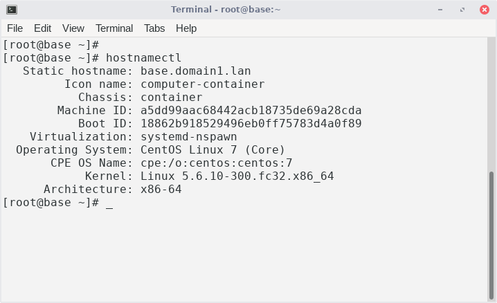

The base appliance contain minimal Linux operating system, other software applications are installed on top of this appliance.
This image show the appliance operating system and used kernel of the host system.
DownloadTo use this appliance following steps has to be performed
# Install systemd-container
sudo yum install systemd-container
sudo systemctl enable machines.target
sudo systemctl start machines.target
# Download
wget https://github.com/ivoprogram/linuxapp/releases/download/base/centos7.base-2020-06-10.tar.gz
# Extract to folder
sudo mkdir /opt/linuxapp
sudo tar -xf centos7.base-2020-05-12.tar.gz -C /opt/linuxapp/
sudo semanage fcontext -a -t svirt_sandbox_file_t "/opt/linuxapp/centos7.base(/.*)?"
sudo restorecon -R /opt/linuxapp/centos7.base
# Start appliance for test
sudo systemd-nspawn -bD /opt/linuxapp/centos7.base
user: root
pass: root
# Exit container
Ctrl+]]]
# Configure systemd-nspawn
sudo vi /etc/systemd/system/systemd-nspawn@.service
ExecStart=/usr/bin/systemd-nspawn --quiet --boot --settings=override –machine=%i
# Create link to container
sudo ls -l /var/lib/machines
sudo ln -s /opt/linuxapp/centos7.base /var/lib/machines/centos7.base
# Enable and start appliance service
sudo systemctl enable systemd-nspawn@centos7.base
sudo systemctl start systemd-nspawn@centos7.base
# Use appliance
ssh root@127.0.0.1 -p 55522
pass: root
Requirements for the host system.